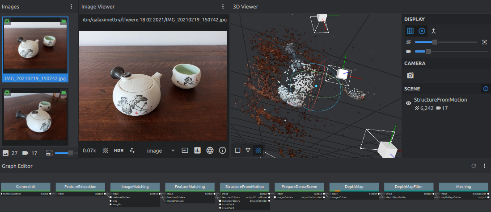
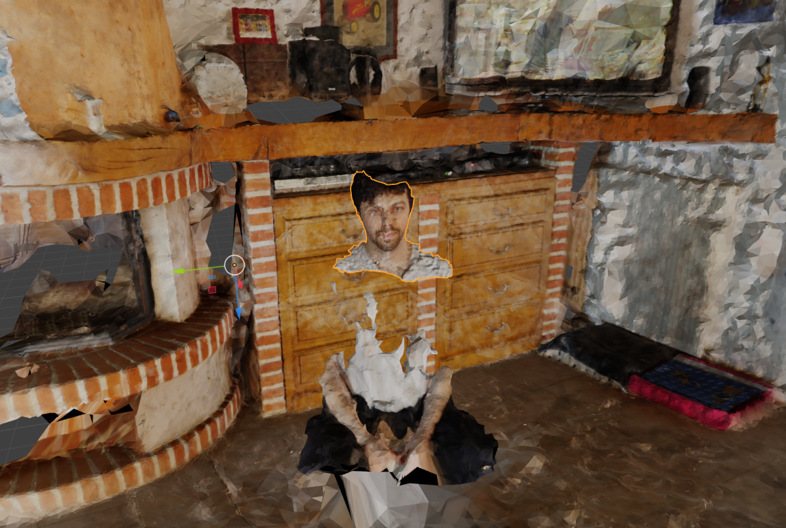
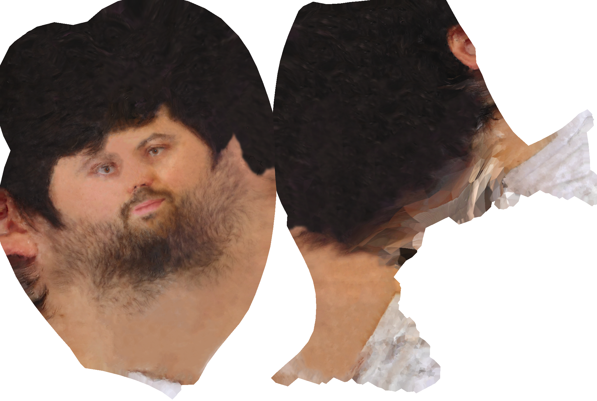

Making a 3D Avatar
After playing Puzzling Places for a while and learning about Structure From Motion with Prof Lee Gim Hee at NUS, I've taken an interest in photogrammetry, i.e. retrieving 3D shapes from a set of 2D pictures. It's a pretty complex process, because the program has to figure out by itself the exact locations from which each picture was taken.It turns out today there's some amazing free software that takes care of the whole 3D reconstruction for you. Meshroom in particular lets you see the whole process unfold on its interface. Even before the computation is complete, you can check the correspondences and the estimated camera positions to make sure the intermediate steps are not completely off (and sometimes they are). 
After experimenting with cats and teapots, I thought I'd try to make a 3D avatar of myself so I could use it instead of a dull 2D profile picture. However, capturing one's face is especially challenging, because the subject must not move the slightest for the reconstruction to work well.  The resulting textured mesh is alright. Meshroom seems to have totally missed the torso and the hair, but the face is recognizable and only slightly deformed. It also has over 300 thousand triangles, so we'll need to remesh that. After removing all of the background, I sculpted myself some approximate hair in Blender and smoothed the mesh. It's still ridiculously refined in some spots, so we'll do some quick remeshing using Instant Meshes to generate a regular and coarse triangle mesh. The texture has some issues. Most importantly, the room lighting combined with my camera's parameters led to a strange white line and different shades on both cheeks. But before we actually get to it, it's really important to bake a new texture in Blender. Meshroom generates messy textures with tiny patches, which makes them very hard to edit. Once this is done, we're able to photoshop away these white stains on the texture and fix the eyes. The final texture is somewhat terrifying, but that was to be expected. I'm just glad the real me is in 3D.  And for the final presentation, we'll export the UV coordinates and visualize the mesh in libigl:

The final result is pretty convincing. There's definitely a bit of an Uncanny Valley feeling, which means it's quite a success, I guess. If you want to make your own avatar, here are two videos I'd recommend to get started quickly: this one covering the basics of meshroom and photogrammetry, and this one on how to clean-up your mesh and bake a new texture. 13.05.21